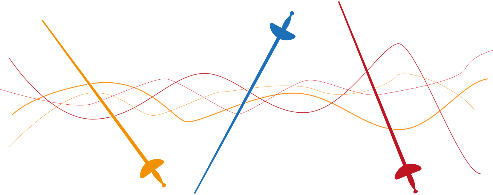

Рапіра
Рапіра - це лікарський засіб для лікування гострих та хронічних захворювань бронхолегеневої системи, що супроводжуються надмірним утворенням мокротиння.
Діючою речовиною Рапіра є ацетилцистеїн, який відноситься до групи муколітиків - речовин, які здатні розріджувати в’язкий слиз у бронхах, у тому числі гнійного походження.
Для різних вікових груп та для різних клінічних ситуацій Рапіра виготовляється у трьох дозуваннях: по 100, 200 та 600 мг діючої речовини.
Механізм дії
N-ацетил-L-цистеїн (АЦ) чинить виражену муколітичну дію на слизовий і слизисто-гнійний секрети за рахунок деполімеризації мукопротеїнових комплексів і нуклеїнових кислот, які надають в’язкості гіаліновому і гнійному компонентам мокротиння та іншим секретам.
Кашель - це захисний механізм нашого організму, який допомагає очистити дихальні шляхи від сторонніх об'єктів, у тому числі від слизу. В'язкий бронхіальний слиз складається, окрім іншого, з мукопротеїнових комплексів, які можна уявити довгими молекулами, схожими на ланцюги (див. Рис.1)
Завдяки цим комплексам та іншим речовинам, слиз набуває в'язкої консистенції, може прилипати до стінок бронхів і важко відкашлюватись.
Щоб полегшити відкашлювання та відходження такого слизу Рапіра, завдяки вмісту ацетилцистеїну, розриває довгі ланцюгоподібні молекули на менші шматочки.
Це дозволяє зменшити в'язкість слизу, покращити його реологічні властивості та допомагає легше відкашляти мокротиння.
Додаткові ефекти
Окрім того, Рапіра володіє рядом інших ефектів, які допомагають пацієнтам у лікуванні гострих та хронічних бронхолегеневих захворювань, що супроводжуються надмірним утворенням мокротиння, а саме:
- Прямий та непрямий антиоксидантний ефект
- Стимуляція активності мукоциліарного апарату, що сприяє поліпшенню мукоциліарного кліренсу
- Підвищення вироблення сурфактанту, за рахунок стимуляції пневмоцитів типу 2
- Зниження індукованої гіперплазії мукоцитів
Смак та вигляд готового розчину Рапіра
Завдяки вмісту дозволених для використання у лікарських засобах ароматизаторів та речовин, готовий розчин Рапіра 100, 200 та 600 володіє апельсиновим ароматом та має злегка жовтуватий (цитрусовий) відтінок